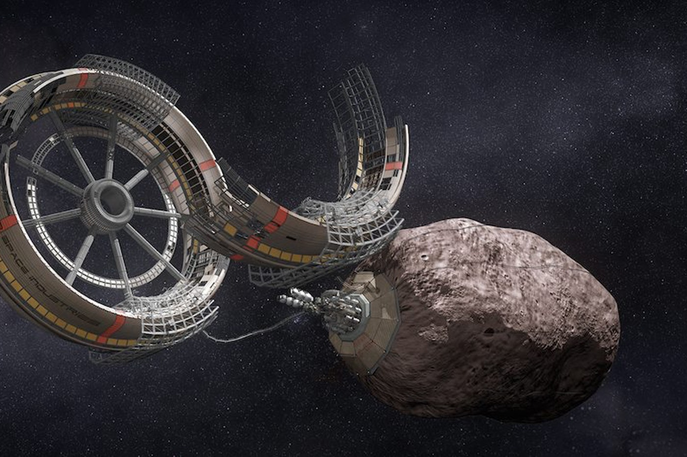

As we have stated before, the bobfish, along with the other creatures on the planet, have much better technology than humans. So far, we have seen large "ocean pods" on the moon of Aquis, know as the Noob. The Noob is a rocky moon, so large pods of water were contructed on the surface so that these aliens could live here. There are also large rings around asteroids. These are probably used to mine from the asteroids. Large structures have been built on the black hole in the middle of the Andromeda galaxy, which may propel the entire galaxy. Because the Andromeda galaxy is moving towards the Milky Way, scientists now believe that the structures are bringing Andromeda towards us.
An asteroid miner on an asteroid near Aqius
Because of their amazing technology, there is a rising concern that the bobfish may be a hostile species, and will come to claim Earth. However, the bobfish do not seem to have an interest in humans and seem to have found us long before we discovered them.